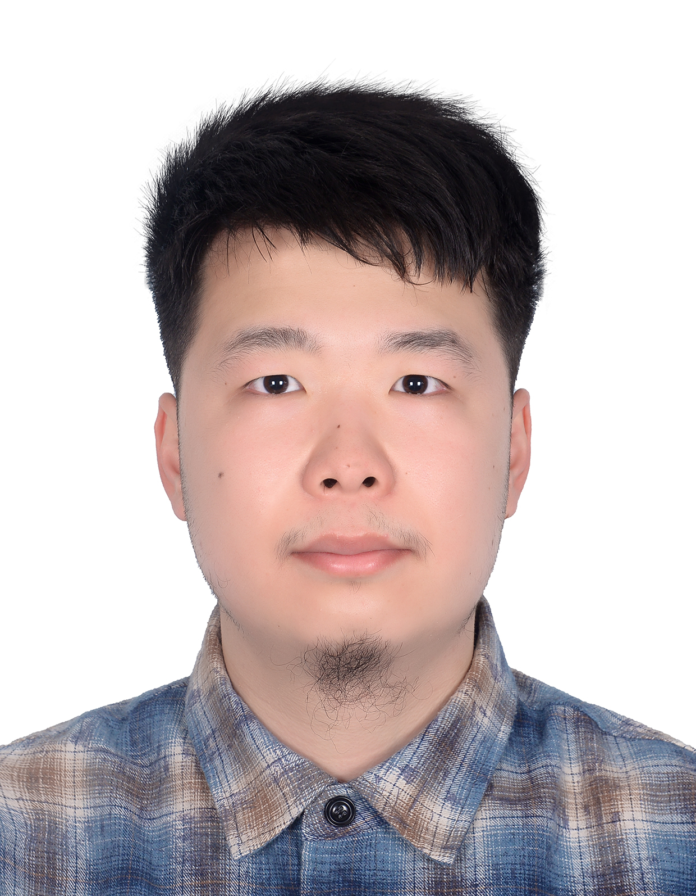

Envisioning Beyond the Few: Disentangled Semantics and Primitives for Few-Shot Atypical Layout-to-Image Generation
Separating semantic identity from visual primitives to generate images from layouts with only a few examples.
Your browser kept this tab open.
Make every pixel green. Each click flips that pixel and its four neighbors.

PhD Student in Computer Science and Technology
School of Computer Science and Engineering
State Key Laboratory of Virtual Reality Technology and Systems
Beihang University
I am a PhD student at Beihang University. My research interests include multimodal visual perception and controllable image generation. My recent work explores event–RGB segmentation under challenging sensing conditions and layout-to-image generation with only a few examples.
Separating semantic identity from visual primitives to generate images from layouts with only a few examples.
Aligning event and RGB features through shared edge cues for resilient semantic segmentation in difficult conditions.
[ Paper | Code & Datasets ]
| 2024–present |
Beihang University
PhD student in Computer Science and Technology |
|---|---|
| 2023–2024 |
Beihang University
Master’s studies in Software Engineering |
| 2018–2022 |
Beihang University
Bachelor’s degree in Computer Science and Technology |
| 2022–2023 |
National Education Examinations Authority
Internship, September 2022 – August 2023 |
|---|---|
| 2021–2022 |
SenseTime
Internship, December 2021 – September 2022 |